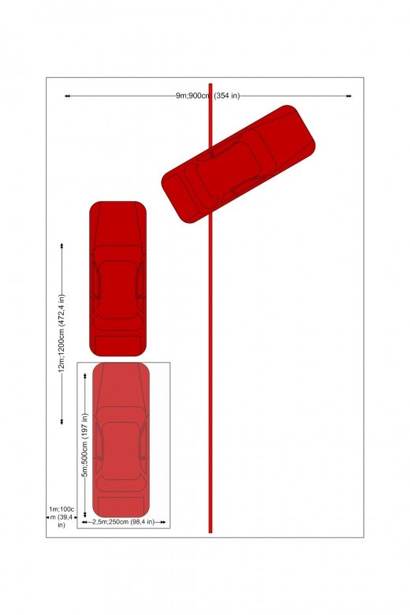

Three point turn
You start off in the bay allocated for you on the yard. For the first explanation, let's assume that you are on the left of the bay and you want to reverse in (look at the diagram). For anyone who lives in a country where you drive on the right hand side of the road, the instructions will follow later

Get full the "Three point turn" video tutorial on this link https://youtu.be/ebZM_JJKL4c 2020 CopyRight
1. Mirror, blind spot right and indicate right.
2. Do your full observation; mirror, right blind spot, mirror, left blind spot and mirror.
3. Start moving forward for a bit, slowly.
. Start turning the wheel full lock to the right.
5. Before you reach the kerb, turn the steering wheel back one-and-a-half or two turns to straighten up, stop and put the handbrake on.
6. Mirror, blind spot left and indicate left.
7. Do your full observation; mirror, right blind spot, mirror, left blind spot and mirror.
8. Start reversing and put the wheel on full lock to the left.
9. Before you reach the kerb, turn the wheel back to straighten up again, then stop and put the handbrake on.
10. Mirror, blind spot right and indicate right.
11. Do your full observation; mirror, right blind spot, mirror, left blind spot and mirror.
12. Start moving forward for a bit, slowly.
13. Once the front of the car crosses the line in the middle, you can start turning.
14. Make sure the whole car is over the line, so you end up on the other side completely.
15. Stop the car behind the white line ahead.